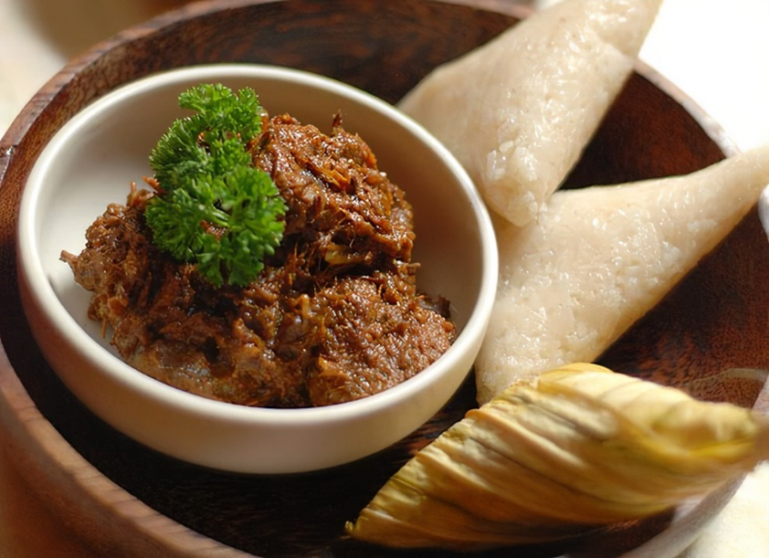

Bubur Lambuk
-
A creamy porridge made by adding meat, coconut milk, flavoured spices and condiments.
-
Huge drums of bubur lambuk are made early in the morning to be distributed among the
Malay communities in the evening by the mosque’s committee.
Ketupat

-
Classic serving dish during Eid in Malaysia where rice cake is bundled in coconut leaves
woven into a form of triangular shape.
-
Serve along with a side called rendang.
Rendang Daging

-
A kind of dry beef curry serve as a side with ketupat.
-
A popular and loved dish alongside with ketupat to be listed as a Malaysian heritage
dish.